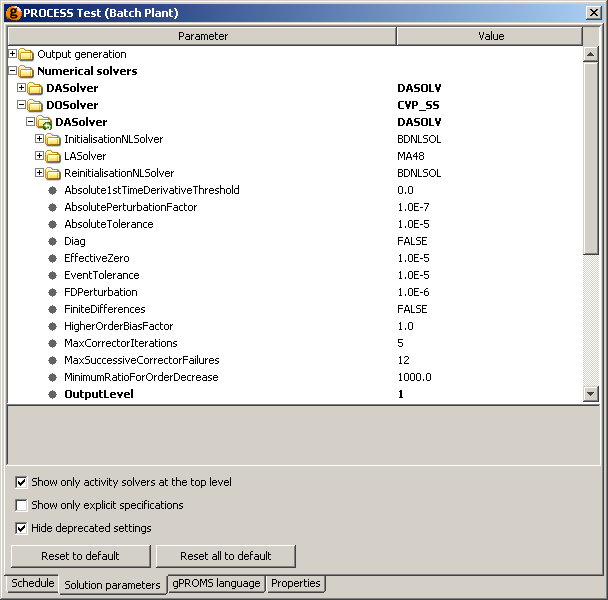

DASolver parameter, whose OutputLevel we
have just changed to 1. Now, if we hide the details of the DASolver parameter, by left clicking on the  symbol, the following will be shown.
symbol, the following will be shown.In order for gPROMS to perform any activity, it must apply a particular type of solver. Each solver typically decomposes the problem into a number of simpler problems that each require a different type of solver. Consider the Solution Parameters for the Dynamic Optimisation activity as shown below.
The top-level solver for Dynamic Optimisation is specified in the DOSolver Solution Parameter (in this case, its value is
CVP_SS). The DOSolver Solution Parameter then contains a DASolver parameter, for solving
differential-algebraic equations. This DASolver has three sub-solvers: two non-linear solvers for initialisation and
reinitialisation and a linear-algebra solver. The non-linear solvers also make use of a linear-algebra solver, and therefore contain their own
LASolver parameter.
Clearly, if one wanted to change the specification of one of the solver parameters for all occurrences in an activity, then setting all of these
individually would be time consuming and prone to error. For this reason, when a solver parameter is specified at the highest level, its value is
inherited by all of the same solver parameters at a lower level. To see this, let us change the OutputLevel of the
DASolver to 1 and see what happens to the other solvers that have DASolver parameters.
First, we can see that the Numerical solvers Solution Parameter is now displayed in bold face, indicating that one of the Solution Parameters
therein has been specified a non-default value. Similarly with the DASolver parameter, whose OutputLevel we
have just changed to 1. Now, if we hide the details of the DASolver parameter, by left clicking on the symbol, the following will be shown.
So we can see that the effect of specifying OutputLevel in DASolver has been to modify Solution Parameters within the solver specifications for Dynamic Optimisation, Experiment Design and Parameter Estimation, since all of these make use of a DASolver. The fact that the DASolver in DOSolver has inherited values is indicated by a icon.
If we expand the DASolver parameter (inside the DOSolver section), we can see that the OutputLevel has changed there:

Now it might be that we don't want the value to be propagated to the DASolver parameters in the other activities. In this
case, we can override the inheritance directly by going to the DASolver parameter and changing it. In the image below, we have
changed the value of OutputLevel (in the DASolver of the PESolver parameter) to 3 and so the
fact that the value overrides the inherited value is indicated by a icon; the fact that
the value is still altered from the default is shown, as usual, by the bold text.
Finally, if we change the value back to its default, then text returns to the normal weight to show that the parameter is at its default value but the icon remains because it is overriding the setting at the higher level.
One can imagine that once a lot of specifications have been made, it will become extremely difficult to track where an inherited value has come from. This task can be made much easier by checking the Show only explicit specifications box, as shown below.
So in the figure above, we can see that the only specification that has been made is in the top-level DASolver. None of the
other Solution Parameters are visible because they have not been specified explicitly. The DASolver parameter under
PESolver is shown to indicate that it is overriding the earlier specification.